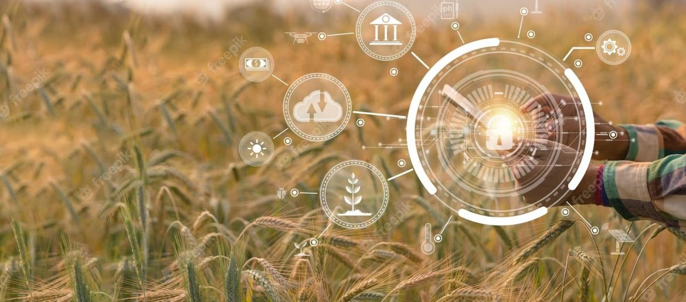
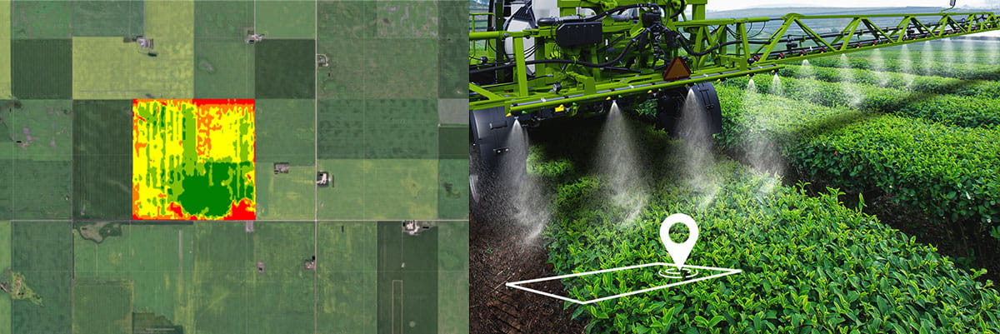
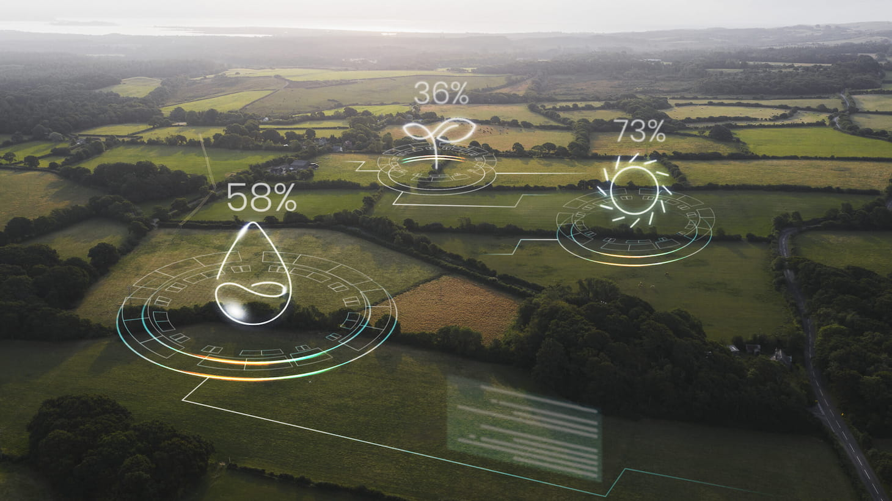
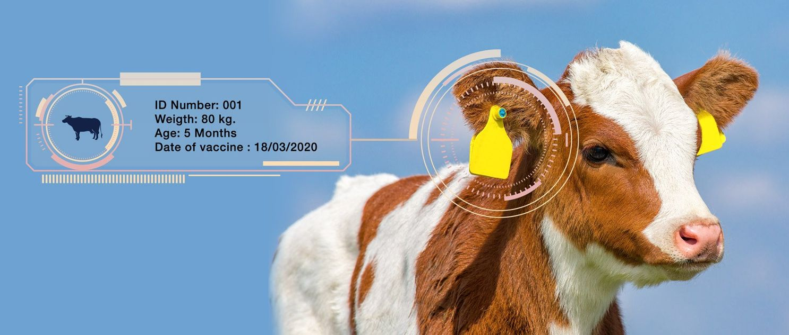
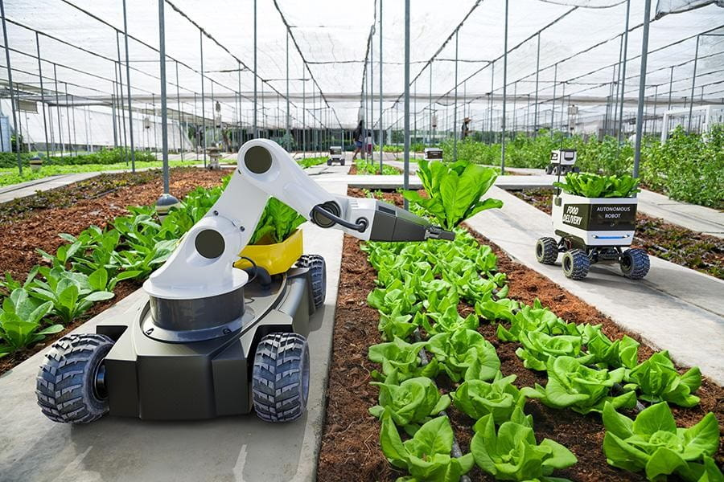

Modern Farming Technologies in Agriculture: 8 Great Examples
Many technological changes happen not only in the world of AR/VR, cybersecurity, and web development. The agriculture sphere is one of the most notable representatives of innovation use. Indeed, drones, robots, and other great machines implementing in the farming sector, and we can see amazing results of IoT in agriculture.
The agricultural sector since farming is no longer considered a sphere far away from IoT and technology. Studies show that population growth is supposed to increase by another 3 billion more lives by 2050. Therefore, industrialized farming has a necessity to change things for the better.
Find out how IoT and other technologies are revolutionizing modern farming and how their application can benefit agribusinesses.
GIS-Based Agriculture
Half the competition battle in farming is choosing a great piece of land. You’re the lucky ones if you have a family generation of farmers. But new farmers do not have such a luxury, and, being first-timers, they want to pick the right piece of land without risks and lead IoT farming successfully.
It brings them to GIS software, a geographic information system. It is a modern farming technology that can depict current and future changes in precipitation temperature, soil condition, plant health, and several other pieces of helpful information to have a good harvest.
A farmer can also benefit from GPS-based applications along with smart machinery to improve the application of IoT in agriculture to specific field areas to save money and effort.
Livestock Farming Technology
Advanced technologies allow farmers to use sensors, data, and processing algorithms to improve animal raising and care, as well as optimize farm management and overall productivity. The technologies allow livestock businesses to obtain good results even in countries unsuitable for animal husbandry, for example, Israel.
The following list shows several examples of modern farming technologies used to achieve the objectives:
1. Remote health monitoring. Remote monitoring technologies provide more data on animal health and welfare than ever before. For instance, animals are weighed with movable scales installed in the floor covering. Using this tech, farmers do not need to physically contact animals or drive them into pens.
2. Automated feeding systems. Resorting to such feeding systems, farmers can now provide cattle, pigs, and other livestock with premixed feed in amounts specifically developed to meet a particular group’s needs. The systems ensure animals’ nutritional requirements and reduce overeating to a minimum.
3. Milk meter. The device accurately measures milk yields and estimates the most favorable time for milking device removal to protect the cows’ udders. Based on the data received from a milk meter, the software warns farmers about potential mastitis. They can initiate early preventive measures and minimize drug usage.
Sattelite-Derived Data
For example, they can predict crop yields or help farmers monitor their fields in real-time. Predictability is crucial when growing seeds in a ‘freakish’ climate zone. No hardworking farmer wants to surprise himself with dry plants while attending to his crops.
IoT farming applications help to work across a number of different spectral indices:
The internet of things in agriculture is applied to help farmers control plant health, vegetation content, nutrient application, nitrogen content, and soil background impact.
Data From Drones
Farmers lose much if they neglect the achievements of IoT in agriculture and see only one perspective of their fields and crops – from their own eyes. It fits if you have small territory, but it becomes hard to control hectares of an industrialized farm just by foot or even a machine.
Benefits of using drones in farming:
Additionally, data from drones is supposed to be more accurate with a far greater resolution compared to satellites. If they are locally operated, they also provide any climate or crop valuable information faster.
Custom IoT development services with features to interact with IoT devices and ensure seamless software and hardware collaboration.
EOS Crop Monitoring
How does it work? The system is supposed to give the farmer as much information as he would obtain, saving time and money due to a simple subscription. The digital platform also ensures that farmers can speed up decision-making and not miss any crucial field treatment points.
Benefits of EOS monitoring in farming and agriculture:
By knowing all satellite-based information due to IoT in Agriculture, farmers can prevent bad scenarios like frost or heat damage, insects, etc., to grow the best harvest without dampers.
RFID Technology
This smart farming technology involves the use of small electronic tags that can be attached to livestock, crops or equipment and transmit data wirelessly to a reader.
By attaching electronic tags to each animal, farmers can easily monitor its location, movement and health. This can help farmers identify potential problems, such as illness or injury, and respond quickly to ensure the well-being of their animals.
In addition, RFID technology can help improve the safety and security of farming operations. By attaching electronic tags to equipment, farmers can monitor its location and ensure it is not stolen or misused. This can help prevent costly losses and keep operations running smoothly.
Farm Management Software
Dedicated farm management software serves farm owners as a platform where they can get a whole picture of all business aspects and factors affecting the successful operations of farms. Using this software, farmers can effectively plan their activities, conduct their real-time monitoring, and make learned decisions.
To reach the goals, farmers can use a universal ERP system like Odoo adapted according to the needs and peculiarities of customers engaged in agribusiness.
Technologically Innovative Machinery
Modern industrialized farming is impossible without technologically innovative machinery to get the job done with all field information. This sphere ranges from automatic harvesters to large industrialized sorters. Besides, it covers livestock tracking with ERP systems or mobile/web development for better IoT farming communication.
Farmers can increase versatility significantly using smart machinery and automation approach to save human resources and time to grow harvest. Most of the equipment is multipurpose, so you definitely adjust it to your specific needs.
Conclusion
In a perfect scenario, combining all these technologies can speed up your farm productivity from scratch and show all the benefits of IoT in agriculture. Farming is indeed a complex process in the era of the technological wave that revolutionizes the efficiency of farms worldwide.
As the population grows, there is a need for more quality food, and farmers must perform double to satisfy the demand. It is where drones, satellites, and GPS come to the fore to optimize farm work and complement human resources.
We develop innovative smart agriculture software solutions tailored to your business needs. Don’t hesitate to contact us to schedule a free consultation with one of our experts and see how we can help your business grow!